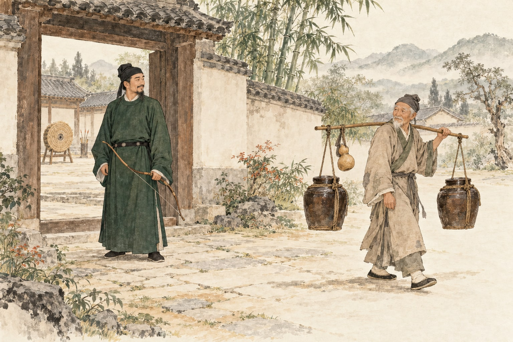

原文点有细线的字词，读音释义即现
慢读先看一幅画，再读一段文。
不急着把每个字都记住，看一看动作，听一听话里的分寸。
画卷目录从任意一幕，走进故事
给一起读书的大人
第一回可读到第三幕，看看人物的本领、动作和语气；第二回慢慢看覆钱与酌油，再回到那声“笑”。一次读完也可以，愿意在哪一幅画前停留，就在那里多看一会儿。
先听孩子怎样解释，再展开白话和提示。故事里的“手熟”可以联系她自己的经验，但不把它变成催促练习的口号；让她说出哪一步变稳了、为什么，是更有意思的迁移。
正文采用通行课文的两段选文，分成六幕。《归田录》原作另有一句联系《庄子》的结尾，收在“全文”页的补读中。插画为 AI 依据文意创作，服饰、庭院、器物尺寸属于艺术想象。
查看原文版本与资料说明 →停一停 · 你来发现
水墨插画为艺术想象 · 可用键盘 ← → 翻页
把六幕，连成一篇
卖油翁
〔北宋〕欧阳修
原作补读：故事之外，还有一句
通行课文在“康肃笑而遣之”处结束。《归田录》原作后面还有一句，联系到《庄子》里的两个故事：
此与庄生所谓解牛斫轮者何异？
大意是：这与庄子所说的解牛、做车轮的故事，有什么不同呢？“斫”指砍削。这里可以先留作下一次阅读的入口，不必一次学完典故。
本册以通行字“斫”呈现；维基文库原作页面作“斵”。正文开头采用课文的“陈康肃公善射”，原作另见“陈康肃公尧咨善射”。
文止于此，回味未止。
把字词，放回句子里
字词小笺
认一个字，也看它在这一句里做什么。
同一个字，要听它在句中怎样说
尔
但手熟尔：罢了。
尔安敢：你。
以
以我酌油知之：凭借。
以钱覆其口：用。
但
但微颔之：只是。
但手熟尔：不过。

合上书，还能带走什么
本领之外，还有从容
一线油流很细，
让我们看见的却很多。
留下一句，属于自己的体会。
可以谈本领、练习，也可以谈说话与待人。选一个你愿意聊的，不必把感想写成标准答案。
只保存在当前浏览器中。
想聊得更深一点：两个人的本领，有什么相通处？
回到“十中八九”和“自钱孔入，而钱不湿”。如果把射箭和倒油放在一起看，你会怎样解释“手熟”？请先用这两处细节说说自己的想法。
聊过之后，再读一种理解
射箭与倒油是不同的事，都能在熟练的动作中显出准确和稳定。故事常被用来说明“熟能生巧”。这四个字是对故事道理的概括，并没有直接出现在正文中。
迁移到自己的练习时，还可以观察哪里不稳、调整做法、再试一次。不是把同一个错误机械重复很多遍，就一定能练好；故事也没有承诺所有本领都只靠次数。
走近写下故事的人：欧阳修
欧阳修（1007—1072），北宋文学家，字永叔，号醉翁，晚号六一居士。这篇文章出自他的《归田录》。
这则短小的故事没有把人物讲成长篇道理，而是写“睨”“颔”“忿然”“笑”，让我们在动作、神态和对话里体会。下一次写人，也可以试着选一个真正能说明特点的小动作。
原文与资料 →纸上
回到那座庭院 →画一个“越来越稳”的动作。
想一件自己由生疏变熟练的小事。画出或说清那个关键动作：以前哪里不稳，后来怎样调整？如果暂时想不出，也可以下次留意一位家人做熟悉的事。
卷末 · 资料与制作
一则小事，也有文字的来处。
原文与版本
六幕正文采用通行课文的两段选文，从“陈康肃公善射”到“康肃笑而遣之”，不删改所选正文。第四、五幕合为同一句，分幕处保留原有逗号。“全文”页保留两段，并补列原作联系《庄子》的末句。
原作另见“陈康肃公尧咨善射”；补读末句中的“斫轮”在维基文库作“斵轮”。本册正文“尔”与“杓”保留古文写法，分别按语境注释；“自钱孔入，而钱不湿”保留通行标点。
校核来源：维基文库：《卖油翁》原作文本；古文岛：《卖油翁》原文与注释。查阅日期：2026 年 10 月 29 日。古文为公版作品，白话、字词说明与共读提示为本册重新组织的辅助内容。
读音与理解
重点处理“自矜 jīn”“家圃 pǔ”“睨 n씓颔 hàn”“酌 zhuó”“杓 sháo”“遣 qiǎn”，并区分“尔”“以”的不同用法。“熟能生巧”是对故事的常见概括，不冒充文中原句。
对人物内心的理解要有动作和对话作依据。“笑”可以有不同体会，原文没有写陈康肃公正式拜师或道歉，也未说明老人会射箭，本册不把这些想象写成事实。
六幅水墨画
配图使用内置 image_gen 工具生成，延续“文言有画”的宣纸底色与墨绿、浅赭色调。人物、衣饰、庭院和钱币形制是依据文意展开的艺术想象，不是古代原画或历史实景复原。酌油画面帮助观察动作，不是精密实验记录。
离线与书架
本册的单文件 HTML 已嵌入全部插画、样式和交互，可单独保存阅读。与其他册放在原来的目录结构中时，可使用“返回书架”和篇目切换；单独分享时这些合集链接需要对应文件，正文阅读不受影响。
孩子主动填写的话只尝试保存在当前浏览器中，不上传。隐私模式或本地文件打开方式可能影响保存，请导出重要内容。书架标签表示文章主题，不代表孩子已经学习或掌握。
回到封面 →